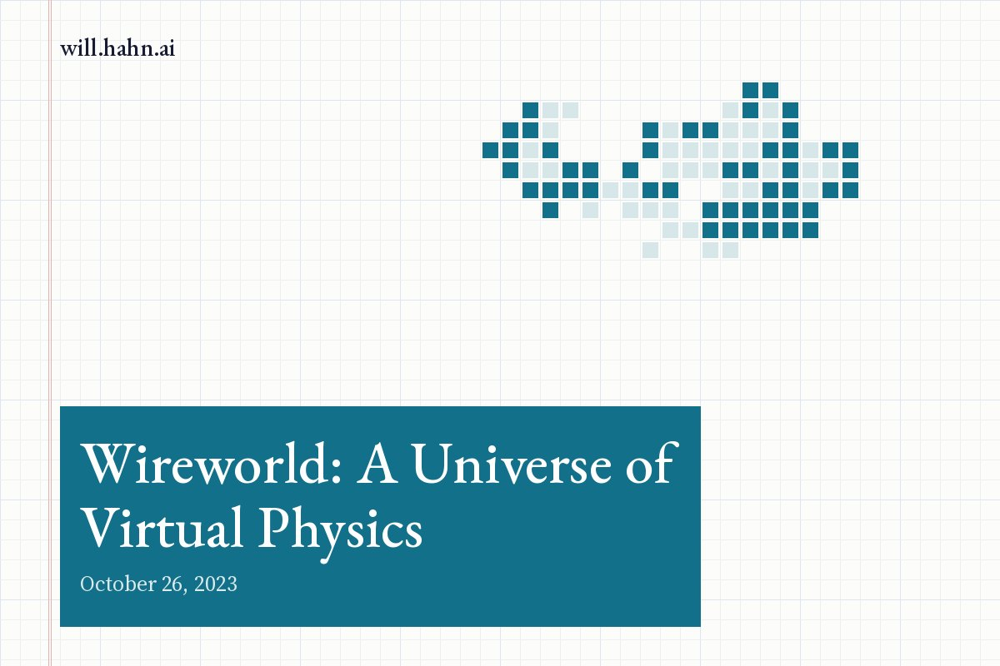

Wireworld: A Universe of Virtual Physics

Picture this: a world made of wires. A microcosm that operates under a set of rules entirely different from our own, yet capable of simulating complex systems akin to circuits and digital logic. This world is not a work of science fiction, but a simulation existing within our computers, known as Wireworld. This peculiar universe is a cellular automaton, a mathematical model used to depict and explore a host of systems, from biological life cycles to physical processes. It's a new 'reality', a novel physics born in the virtual realm.
The Core Concept: Cellular Automata The idea behind Wireworld, and other cellular automata like the famous Game of Life, is quite straightforward. Imagine a grid, a gigantic chessboard where each square - or cell - can change its state depending on the condition of its neighboring cells. This grid changes over time, step by step, following a set of simple rules. In Wireworld, there are four states a cell can adopt: empty, electron head, electron tail, and conductor (or 'wire'). It's the interaction between these states, driven by the rules of Wireworld, that allow complex patterns and dynamics to emerge.
From Wires to Circuits: A Universe within a Universe What's remarkable about Wireworld is its ability to simulate electronic devices. With the right configuration, the virtual wires can transmit signals, create logical gates, memory cells, and even construct an entire CPU. In other words, within the virtual physics of Wireworld, we can recreate the very computer that runs the Wireworld simulation itself. This idea hints at a form of 'meta-physics', where different layers of reality, each with their own 'physical' laws, can co-exist and interact. It's a concept that becomes particularly interesting when we look at the mind-body problem.
Wireworld and the Mind-Body Problem The mind-body problem, a philosophical conundrum that has perplexed thinkers for centuries, questions the relationship between our physical bodies and our non-physical minds. How does the brain - a biological machine - give rise to consciousness and thought?
Wireworld provides a new angle to ponder this mystery. It shows us that simple rules operating on a fundamental level can give rise to complex, high-level phenomena. Similarly, our brains might be seen as cellular automata of a sort. Neurons, like cells in Wireworld, interact with each other following biological rules, giving rise to the mind's complex processes. If a basic system like Wireworld can emulate a computer, could our brain's complex system be emulating consciousness?
Understanding Through Simulating Exploring systems like Wireworld thus offer us new ways to understand the structure and operation of complex systems, whether they're electronic circuits or possibly even human consciousness. It's a form of 'experimental philosophy', a way to test ideas and concepts that might otherwise remain purely theoretical. This, in turn, may inform the development of artificial intelligence and neural networks, providing us with a better understanding of how to construct intelligent systems.
Conclusion: The Universe in the Wire Wireworld gives us a fascinating lens through which to view the cosmos. By simulating a universe with its own 'physics', it challenges us to reconsider what we consider real or fundamental. It proposes that information and pattern processing systems can instantiate new physical laws relevant to their own universe, a thought that could shed light on some of our most profound questions. What is consciousness? How are mind and body related? Is our universe one of many, each with their own unique laws of physics? These are inquiries we are only beginning to probe, but with the help of virtual worlds like Wireworld, we may find ourselves one step closer to unraveling these mysteries.
The Core Concept: Cellular Automata The idea behind Wireworld, and other cellular automata like the famous Game of Life, is quite straightforward. Imagine a grid, a gigantic chessboard where each square - or cell - can change its state depending on the condition of its neighboring cells. This grid changes over time, step by step, following a set of simple rules. In Wireworld, there are four states a cell can adopt: empty, electron head, electron tail, and conductor (or 'wire'). It's the interaction between these states, driven by the rules of Wireworld, that allow complex patterns and dynamics to emerge.
From Wires to Circuits: A Universe within a Universe What's remarkable about Wireworld is its ability to simulate electronic devices. With the right configuration, the virtual wires can transmit signals, create logical gates, memory cells, and even construct an entire CPU. In other words, within the virtual physics of Wireworld, we can recreate the very computer that runs the Wireworld simulation itself. This idea hints at a form of 'meta-physics', where different layers of reality, each with their own 'physical' laws, can co-exist and interact. It's a concept that becomes particularly interesting when we look at the mind-body problem.
Wireworld and the Mind-Body Problem The mind-body problem, a philosophical conundrum that has perplexed thinkers for centuries, questions the relationship between our physical bodies and our non-physical minds. How does the brain - a biological machine - give rise to consciousness and thought?
Wireworld provides a new angle to ponder this mystery. It shows us that simple rules operating on a fundamental level can give rise to complex, high-level phenomena. Similarly, our brains might be seen as cellular automata of a sort. Neurons, like cells in Wireworld, interact with each other following biological rules, giving rise to the mind's complex processes. If a basic system like Wireworld can emulate a computer, could our brain's complex system be emulating consciousness?
Understanding Through Simulating Exploring systems like Wireworld thus offer us new ways to understand the structure and operation of complex systems, whether they're electronic circuits or possibly even human consciousness. It's a form of 'experimental philosophy', a way to test ideas and concepts that might otherwise remain purely theoretical. This, in turn, may inform the development of artificial intelligence and neural networks, providing us with a better understanding of how to construct intelligent systems.
Conclusion: The Universe in the Wire Wireworld gives us a fascinating lens through which to view the cosmos. By simulating a universe with its own 'physics', it challenges us to reconsider what we consider real or fundamental. It proposes that information and pattern processing systems can instantiate new physical laws relevant to their own universe, a thought that could shed light on some of our most profound questions. What is consciousness? How are mind and body related? Is our universe one of many, each with their own unique laws of physics? These are inquiries we are only beginning to probe, but with the help of virtual worlds like Wireworld, we may find ourselves one step closer to unraveling these mysteries.
New essays also go out by email. Subscribe on Substack.